Beş dəqiqəlik bələdçi. Bir dəfə qurursunuz, sonra hər həftə eyni axınla gedir: müəllim tapşırıq verir → şagird kodla girib işləyir → nəticə özü yığılır.
Telefon da kifayətdir. Şəkillər real tətbiqdəndir.
Panelə keçin, «Qeydiyyat»ı seçin, ad, e-poçt və parol yazın. Sonra hesab növünü («Repetitor» və ya «Məktəb») və hesabın adını yazın — bu ad üst zolaqda görünəcək.
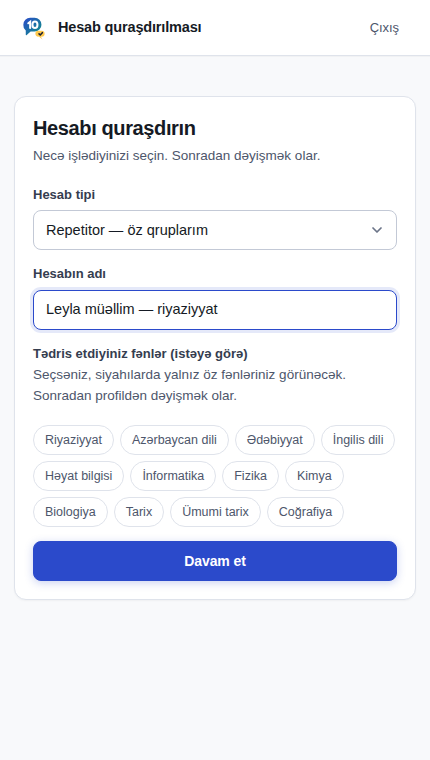
İcmal ekranında qrupun adını yazın və sinfi seçin. Sinif vacibdir: sual bankı, test yığma və dərs planı ona görə daralır.
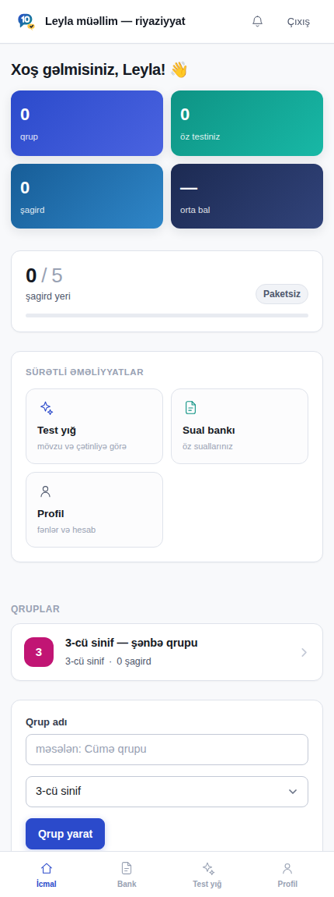
Qrupu açıb ad-soyad yazın. Hər şagirdə daimi giriş kodu yaranır (8 simvol). Kodu «Göndər» ilə WhatsApp-a atın və ya kopyalayın — şagird bu kodla girir, parol yoxdur.
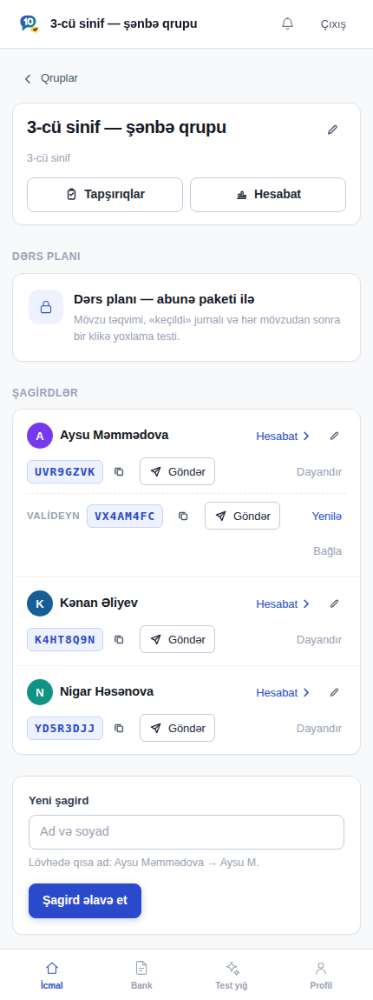
Qrup ekranında «Tapşırıqlar» → testi seçin, son tarix və cəhd sayı qoyun. Şagird girən kimi tapşırığı görür, son tarixə nə qaldığı da yazılır.
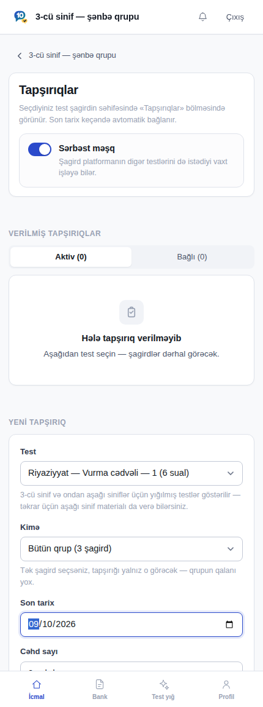
«Test yığ» — fənn, sinif, mövzu və çətinliyi seçin, sistem sual bankından test yığır. «Sual bankı»nda öz suallarınızı da yaza bilərsiniz; onlar yalnız sizindir.
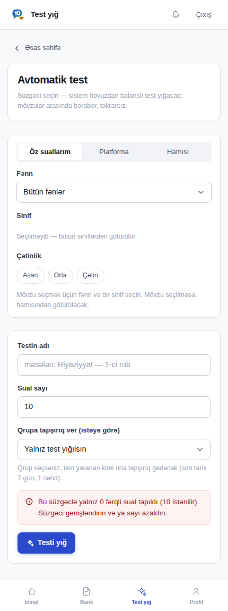
Qrup ekranında «Hesabat»: kim işlədi, kim işləmədi, orta bal, hansı mövzu axsayır. Şagirdin adına toxunsanız onun öz hesabatı açılır — səhv etdiyi suallar da orada.
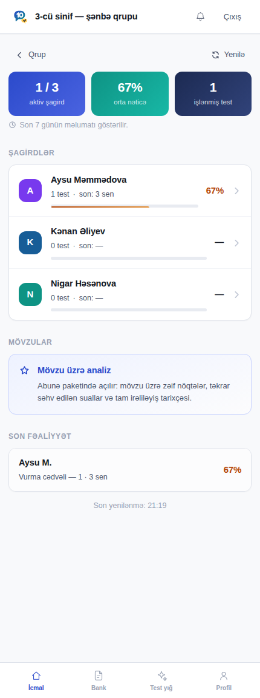
Tamamilə pulsuz. Qeydiyyat yoxdur — yalnız müəllimin verdiyi kod.
Şagird girişinə müəllimin göndərdiyi 8 simvollu kodu yazın. Böyük-kiçik hərf fərqi yoxdur. Bir dəfə girəndən sonra telefon sizi yadda saxlayır.
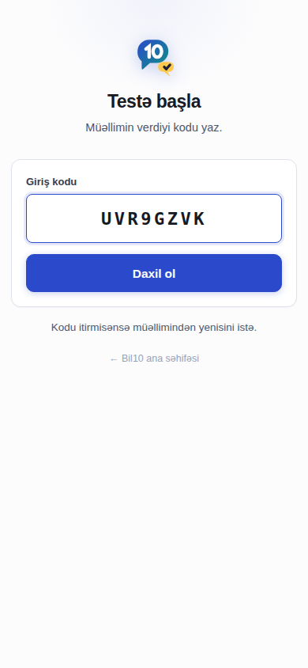
Yuxarıda müəllimin verdiyi tapşırıqlar (son tarix və neçə cəhd qaldığı ilə), aşağıda sərbəst məşq testləri. «sənə» nişanı — bu tapşırıq yalnız sizindir.
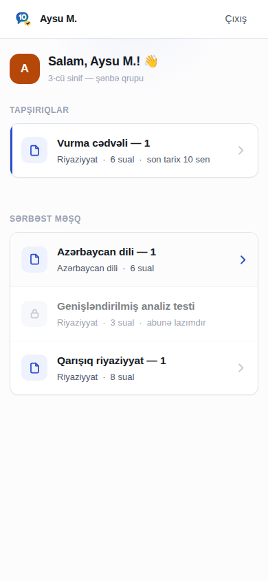
Variantı seçib «Növbəti». Bilmədiyiniz sualı keçə bilərsiniz — xəritədən geri qayıdıb cavablayarsınız. Sonda «Testi bitir».
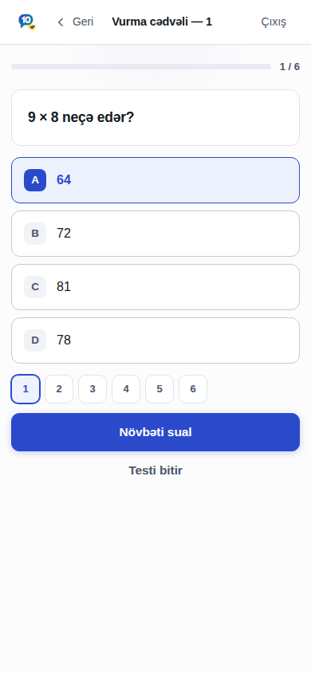
Bal dərhal görünür, müəllim də eyni anda panelində görür. Aşağıda bütün suallar: nə yazdığınız, düz/səhv və izah. Düz cavabın özü göstərilmir — mövzunu izahdan təkrarlayıb məşqdə yenidən sınayırsınız.
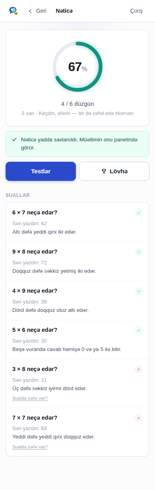
İşlənmiş test sayı, ortalama, ən yüksək nəticə, neçə gündür ardıcıl test yazdığınız, növbəti dərs, zəif mövzular və keçilən dərslər — hamısı bir yerdə. Üst zolaqdakı «‹ Geri» həmişə bura qaytarır.
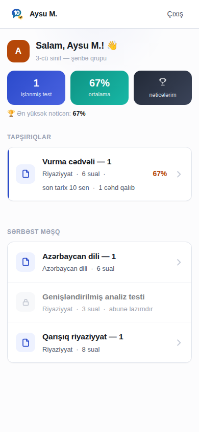
Müəllim açırsa. Bir ekran, 40 saniyə — uşağın necə getdiyi.
Müəllim şagirdin qələmindən «Valideyn girişi»ni açır; «V» ilə başlayan kod yaranır və WhatsApp-la sizə göndərilir. Valideyn girişinə o kodu yazın. Giriş 30 gün qalır.
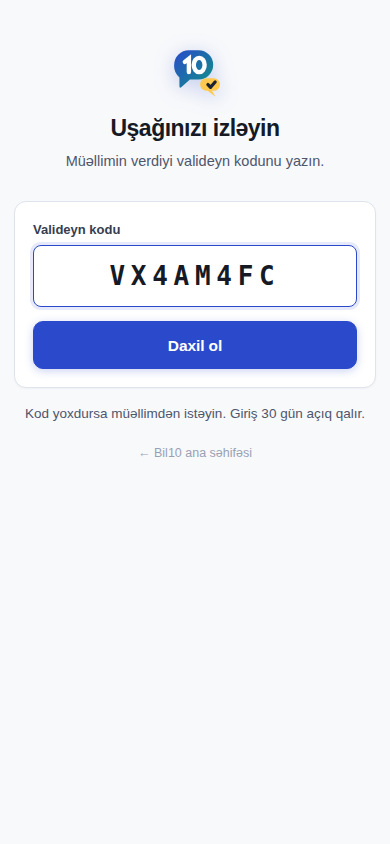
Son 30 günün ortalaması və keçən aya görə meyl, gözləyən tapşırıq və ona nə qədər qaldığı, son nəticələr, zəif mövzular, keçilən dərslər. Uşağın giriş kodu, tam adı və başqa uşaqların nəticələri burada görünmür.
Sualınız olsa müəllimə yazın — ekran əməliyyat üçün deyil, baxmaq üçündür.
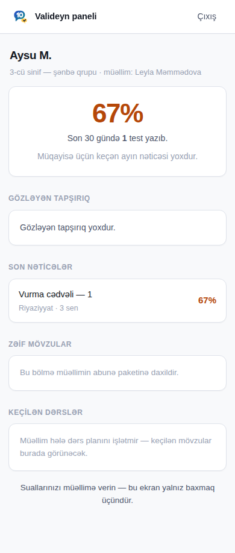
İlk dəfə ən çox ilişilən yerlər.
Kod 8 simvoldur, boşluqsuz. Şagird kodu hərf-rəqəm, valideyn kodu «V» ilə başlayır — ikisini qarışdırmayın. Müəllim şagirdi dayandırıbsa və ya kodu yeniləyibsə köhnə kod işləmir; müəllimdən yenisini istəyin.
Pulsuz hesabda platformanın pulsuz testləri açıqdır, ödənişli testlər və mövzu analizi paketlədir. Müəllimin öz yığdığı testlər həmişə açıqdır.
Müəllim tapşırıqda cəhd sayı qoyub (susmaya görə 1). Nəticəyə və səhvlərə baxa bilərsiniz; yenidən yazmaq üçün müəllim cəhd sayını artırmalı və ya yeni tapşırıq verməlidir.
Nəticədə hər sualda nə yazdığınız, düz/səhv olduğu və izah görünür. Düz cavabın özü açılsa, sual bankı bir gündə paylaşılıb mənasız olar — ona görə izah var, açar yoxdur.
Yox. Seçdiyiniz cavablar telefonda saxlanır; eyni testi yenidən açanda geri qayıdır. «Testi bitir» yalnız internet olanda göndərilir.
Brauzerdə səhifəni açıb menyudan «Ana ekrana əlavə et» (Android: Chrome menyusu, iPhone: Paylaş → Ana ekrana əlavə et). Ayrıca mağaza yoxdur — bu, veb tətbiqdir.
Cəhdləri, cavabları və sessiyaları da silinir. Nəticələr lazımdırsa silməyin — «Dayandır» edin: giriş bağlanır, hesabat qalır.
Xeyr. Valideyn ekranında uşağın giriş kodu, tam adı, düz cavablar və başqa uşaqların nəticələri yoxdur. Müəllim valideyn girişini istənilən vaxt bağlaya bilər — açıq sessiya dərhal kəsilir.
Bələdçi tətbiqlə birlikdə yenilənir. Sual qaldı? Müəlliminizə yazın — müəllimsinizsə paneldə «Profil» bölməsindən bizə çatın.